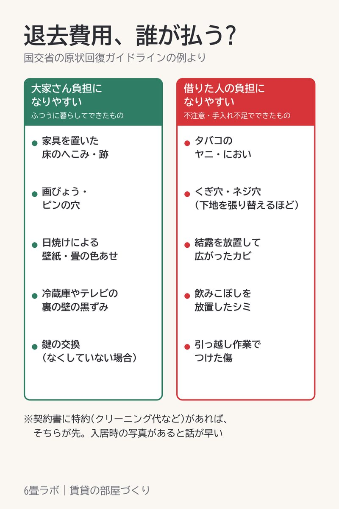

退去費用、どこまで払うのか
この記事には楽天アフィリエイトのリンクが含まれています。

賃貸を出るときに気になるのが、どこまでが自分の負担になるのか、ですよね。
ひとつの目安になるのが、国土交通省の「原状回復をめぐるトラブルとガイドライン」です。
家具を置いていた床のへこみ、画びょうやピンの穴、日焼けによる壁紙の色あせ。こういうものは、ふつうに暮らしていればできるものとして扱われています。
逆に、タバコのヤニや臭い、壁に開けたネジ穴、手入れをせずに広がったカビなどは、借りた人の負担になりやすいとされています。
なので、棚や収納を壁に付けるなら、ネジではなくピンで留めるものか、突っ張り式のものにしておくと安心です。ただ、契約書に特約が書かれていることもあるので、そこは先に確かめておいてください。
それと、入居した日に床や壁の傷を写真に撮っておくと、退去のときに説明しやすくなります。今からでも、これから付く傷との区別には使えます。
紹介した商品
- 【PR】ピンや突っ張りで付けられる、壁に穴を残しにくい収納をまとめた楽天ROOM(楽天市場)